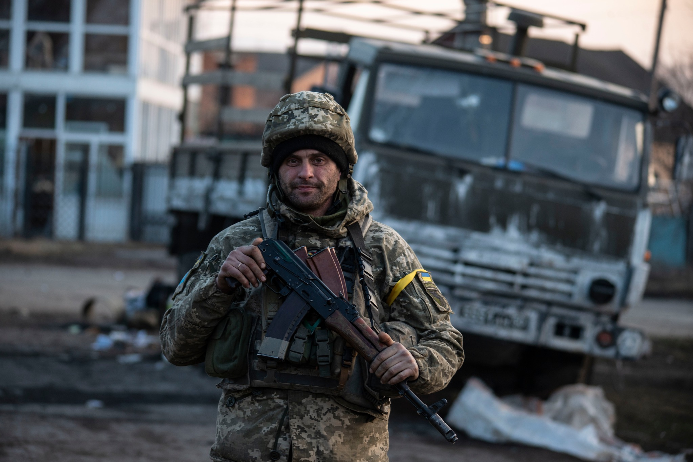
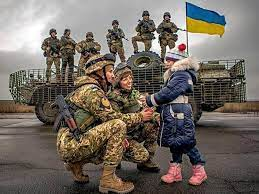
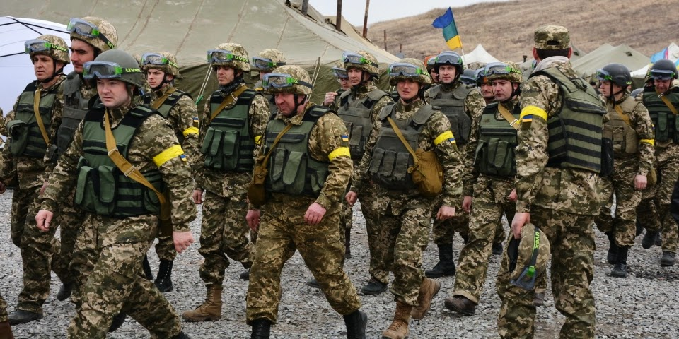

Наступ російської федерації на тереторію України 2022 року
24 лютого 2022 року російська федерація о 5 годины почала наступ на Україну, насправді наступ вони хотіли
почати о 5 годині ранку, але пупкін видно запізнився, бо їв сало з часничком
Бомбив той пупкін всюди де тільки можна, російська федерація почала наступати з усіх боків,
з півноча України, зі сходу, і південного сходу. Звичайно лукашенко і пупкін два діди, два шизанутих дружка, тому наступ
російської федерації ще був з тереторії білорусії, лукашенко виправдав це фразою "а я сейчас вам покажу откуда на белорусь готовилось нападение,
я карти принес". Жорстокі були бої, постраждало багато цивільних та воєнних, президенту радили міжнародні лідери щоб він виїхав з країни, але
Зеленський відмовився, він працював на повну і дальше продовжує це робити. У перщі місяці цивільні дуже боялися повітряних тривог,
всі виїжджали за кордон (включаючи й мене). Причину нападу пупкін виправдав що в Україні є нацизм та фашизм, що в Україна багато Бандерівців
(ну хоч це вгадав), і типу хоче зробити динацифікацію і деметарілізацію.
Зеленський конкретно говорив про потребу озброєння міжнародним країнам, звісно воеи давали озброєння, гроші на озброєння, але цього було мало.
Зі сторони Німеччини постачання зброї було обіцянкою, згодом все таки Німеччина дала озброєння, і не мало, вони побачили незламний український народ, і побачили
що перемога на нашому боці, росія стала(тай була) опущеною держава, її тепер ніхто не поважає, ніхто її не підтримує, звісно окрім його шизанутого також дружка
лукашенка.
З думки міжнародних генералів тактика російської федерації була сильною і тактичною0 вони добрались до Київської області, але наші
незламні воїни подолали їх, і їхня тактика стала для них провалом.
З боку українського народу була й є дуже велика підтримка, український народ зміцнився, всі почали скидувати на ЗСУ, вохити гуманітарку, і навіть
у нашій групі 1-ІПЗ-22 ми збираємо гроші на ЗСУ.
Це все можна описати двома словами раша - параша(вибачте за відкриту правду)))


